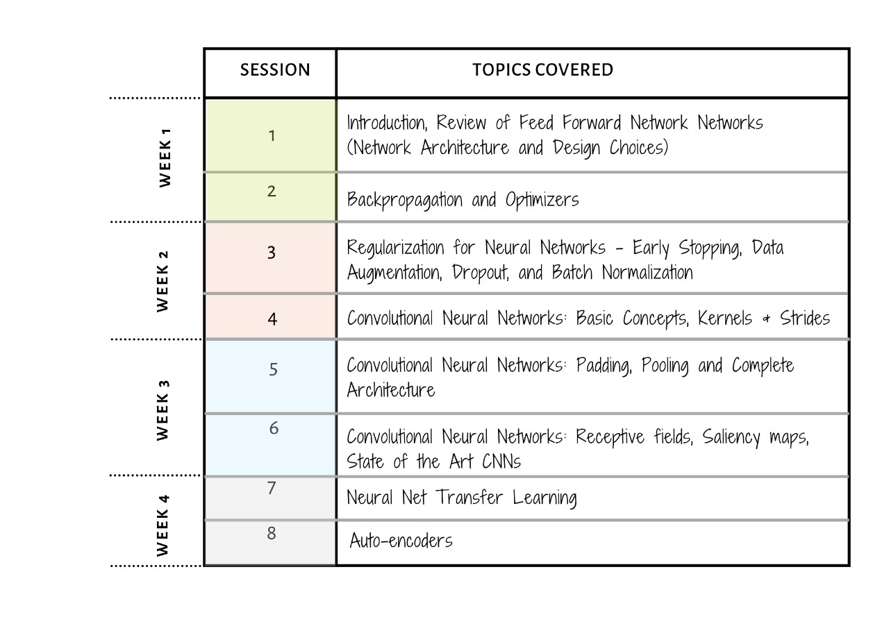

Long ago in a distant land, I, Multi-Layer Perceptron, the shapeshifting master of darkness, unleashed an unspeakable evil. But, a foolish samurai warrior wielding a convolutional sword stepped forth to oppose me.Before the final blow was struck, I tore open a portal in time and flung him into the future where my evil is law. Now, the fool seeks to return to the past and undo the future that is MLP
Welcome to the First Edition of AI2, a follow-up to our introductory course AI1.
In this course, you will continue your data science journey to learn more about convolutional neural networks and how they’re being used for machine learning. We’ll emphasize both the basic algorithms and the practical tricks needed to get them to work well.
The objective of this module is to provide you, the student, with a deeper intuition and understanding of neural networks including network architecture choices, activation functions, feed-forward, convolutional neural networks and auto-encoders.
At the end of this course, you will be able to run a variety of advanced machine learning models, and learn to apply them to practical image recognition problems. This page introduces you to the team, the basic instructions, the schedule and various elements of our class.
If you would like to apply to this program, please go here.
We also provide this course as part of our Masters and Accelerated program, check this link out to get more information and apply.
You can read more about him here.
The teaching assistants for the duration of this course are


We have very carefully designed the coursework to give you, the student, a wholesome learning experience.
Each week shall include:

Before the session begins, students are expected to complete a pre-class reading assignment and and attempt a quiz based on the same.
A session will have the following pedagogy layout which will be repeated three times:
After the session, students are expected to complete a short post-class quiz based on the principal concepts covered in class.

A lab is a TA driven one hour session that is divided into 3 major parts.
After discussing exercises, we will have a semi-formal Q/A session. All doubts pertaining, but not limited, to the previous session, and homeworks are welcome.

There will be a Welcome Session scheduled on 03 November 2020 at 7:00 PM IST for all registered students.
Please check your mail for more information.

NOTE: Below timings are in IST
Lecture Sessions:
9:00 PM - 11:00 PM7:30 PM - 9:30 PMLab Sessions:
9:00 PM - 10:00 PM7:30 PM - 8:30 PMOffice hours:
9:00 PM - 10:00 PMPlease find a more detailed course schedule here.
You are expected to have programming experience at the level of Harvard’s CS50, statistics knowledge at the level of Harvard’s Stat 110 or above and basic machine learning concepts such as model fitting, test-validation, regularization, etc.
Programming Experience:
Experience with Python: functions, variable scope, classes, modules, NumPy, SciPy, Matplotlib
Basic data structures
File I/O
Statistics Experience:
Basics of probability, conditional probability, Bayes’ theorem
Univariate distributions, normal, binomial, Poisson distributions
Multivariate normal distribution
Central Limit Theorem
Machine Learning Experience:
Basic understanding of supervised and unsupervised learning
Regression and Classification
Loss functions
Overfitting and Regularization
Model Selection
Please find a more detailed summary of the pre-requisites for this program here.
We actively seek and welcome people of diverse identities, from across the spectrum of disciplines and methods since Artificial Intelligence (AI) increasingly mediates our social, cultural, economic, and political interactions [1].
We believe in creating and maintaining an inclusive learning environment where all members feel safe, respected, and capable of producing their best work.
We commit to an experience for all participants that is free from – Harassment, bullying, and discrimination which includes but is not limited to:
Reference:
[1] K. Stathoulopoulos and J. C. Mateos-Garcia, “Gender Diversity in AI Research,” SSRN Electronic Journal, 2019 [Online]. Available: http://dx.doi.org/10.2139/ssrn.3428240.
We assume you have a Univ.AI account, created when you signed up at courses.univ.ai. If not, email programs@univ.ai.
All exercises and homeworks in this course will be done in jupyter notebooks. Detailed instructions to setup and work on Jupyter notebooks can be seen here.
Our module policies around collaboration and grading are listed here. Our expectations of you are also laid out in that document.